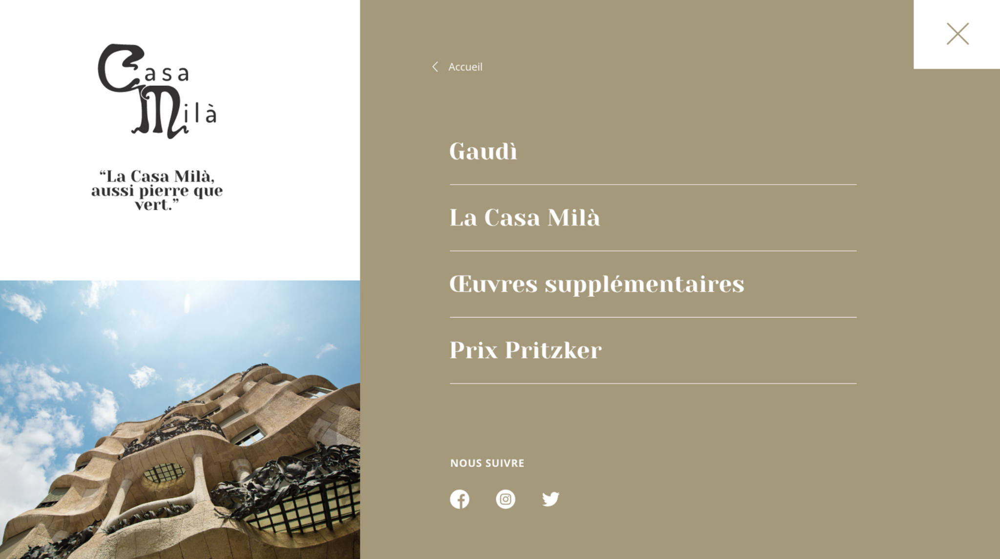
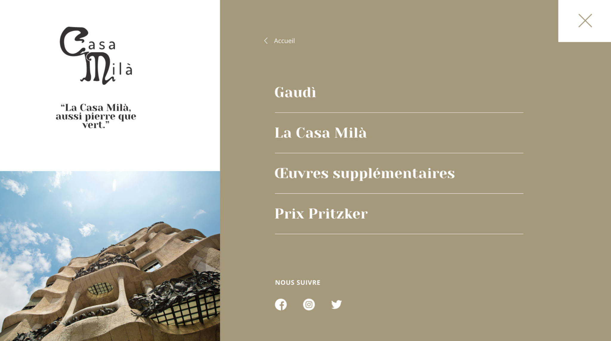

La Casa Milà
PROJECT
- Visual identity - logo proposal | Adobe Illustrator
- Creation of a graphic model
DATE
2021
DESCRIPTION
Antoni Gaudi, the great Spanish architect. Here, my colleagues and I had to create the website of one of Mr. Gaudi's monuments, La Casa Milà
Elements addressed:
- Design and creation of a logo (on Illustrator)
- Creating a guideline
- Creation of the website model
 
